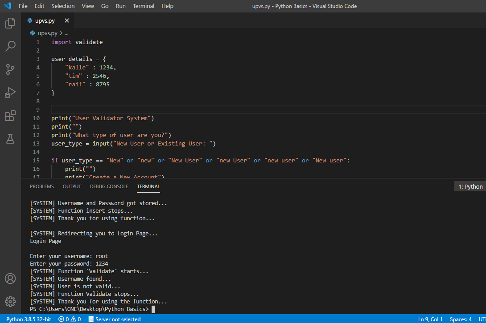

This topic is for the description of maths used in computer algorithms, in order to solve real-world problems. This Section of the project will talk over a Computer algorithm which is used to validate users username and passwords of existing users and also store the new usernames and passwords for new users
[This is the main code where you can see the alogorithm works.]
Lets Run the Code and see if it works properly, and then we will get into the structure of the code and where all maths is used inside it.
By clicking "SHIFT + F5" the program starts to run.
Here the system is asking the user (Currently me) about what type of user am I. So lets see if we can store new username and passwords in this program. For this, I need to type in the input section, that I am a new user.
Now the system will get through this input and then decide what it should do.
System directs me to "Create a New Account Page", here the system is asking me to give a new username and new password.
Lets set the username as root and password as 6489.
The System shows that the data input is in process and the System starts a built-in function called "Insert", which gets start now. The next line shows that username and password got stored by the system inside the database, and then the builtin "Insert" function stops working. The System thanks to the function for doing its work, mentioned on the next line. Now the system redirects me to the Login Page. System is asking for my username.
By writing the username and password, which I have stored first, lets see if the system recognizes or not.
The System shows that a builtin function "Validate" started to run. Then the System confirms that my username has been found inside the database. Then the System gives the clearnce by saying that I am verified as an authentic user and I can access the data (Which ever data, it might concern). Then the System shows that the function "Validate" stops and thanks the function for getting the work done. Then the program stops.
What if I input wrong password for the correct username, eg: 1234.
The system says that username has been found, but the user is not valid because of wrong password.
Now we will head into its Components
This is the layout of the program. The program is abou 43 lines in length, but there is a lot more behind the scene, of course the compilation of this code into machine code for the computer to get itself understand what it should do. Just look at line 1 of the program. It is written "import validate". This statement means that a module "validate" has been imported by me inside this program. So lets take a look inside the validate module.
This is how validate module looks. Its also 43 lines long and it contain two functions, validate and insert functions. Here the function validate requires three inputs, username, password and a dictionary. Dictionary is a place where the data is stored along with data values. So here I choose the name as "user_details" (Refer the main program image). So lets talk briefly about the validate function. At first the function displays a message which is written beside it and then the function changes the location of the dictionary. On line 6, the dictionary keys, which is usernames, are stored inside another location and its data type is a list. This means that all the usernames are inside a list with specific location alloted to each username which represents the location of the passwords. inside the dictionary. On line 7, the function calls a for loop where the function will go through each and every element inside the list of username and checks if any of the stored username is equal to the input username. If the function finds it, it sets the value of status to True condition. If the function cannot find the username inside the stored data, then the function sets the value of status to False